zmq_socket − create 0MQ socket
void *zmq_socket (void *context, int type);
The zmq_socket() function shall create a 0MQ socket within the specified context and return an opaque handle to the newly created socket. The type argument specifies the socket type, which determines the semantics of communication over the socket.
The newly created socket is initially unbound, and not associated with any endpoints. In order to establish a message flow a socket must first be connected to at least one endpoint with zmq_connect(3), or at least one endpoint must be created for accepting incoming connections with zmq_bind(3).
Key differences to conventional sockets. Generally speaking, conventional sockets present a synchronous interface to either connection−oriented reliable byte streams (SOCK_STREAM), or connection−less unreliable datagrams (SOCK_DGRAM). In comparison, 0MQ sockets present an abstraction of an asynchronous message queue, with the exact queueing semantics depending on the socket type in use. Where conventional sockets transfer streams of bytes or discrete datagrams, 0MQ sockets transfer discrete messages.
0MQ sockets being asynchronous means that the timings of the physical connection setup and tear down, reconnect and effective delivery are transparent to the user and organized by 0MQ itself. Further, messages may be queued in the event that a peer is unavailable to receive them.
Conventional sockets allow only strict one−to−one (two peers), many−to−one (many clients, one server), or in some cases one−to−many (multicast) relationships. With the exception of ZMQ_PAIR and ZMQ_CHANNEL, 0MQ sockets may be connected to multiple endpoints using zmq_connect(), while simultaneously accepting incoming connections from multiple endpoints bound to the socket using zmq_bind(), thus allowing many−to−many relationships.
Thread safety. 0MQ has both thread safe socket type and not thread safe socket types. Applications MUST NOT use a not thread safe socket from multiple threads under any circumstances. Doing so results in undefined behaviour.
Following are the thread safe sockets: * ZMQ_CLIENT * ZMQ_SERVER * ZMQ_DISH * ZMQ_RADIO * ZMQ_SCATTER * ZMQ_GATHER * ZMQ_PEER * ZMQ_CHANNEL
Socket types. The following sections present the socket types defined by 0MQ, grouped by the general messaging pattern which is built from related socket types.
Client−server
pattern
The client−server pattern is used to allow a single
ZMQ_SERVER server talk to one or more ZMQ_CLIENT
clients. The client always starts the conversation,
after which either peer can send messages asynchronously, to
the other.
The client−server pattern is formally defined by http://rfc.zeromq.org/spec:41.
Note
Server−client is still in draft phase.
ZMQ_CLIENT
A ZMQ_CLIENT socket talks to a ZMQ_SERVER socket. Either peer can connect, though the usual and recommended model is to bind the ZMQ_SERVER and connect the ZMQ_CLIENT.
If the ZMQ_CLIENT socket has established a connection, zmq_send(3) will accept messages, queue them, and send them as rapidly as the network allows. The outgoing buffer limit is defined by the high water mark for the socket. If the outgoing buffer is full, or, for connection−oriented transports, if the ZMQ_IMMEDIATE option is set and there is no connected peer, zmq_send(3) will block. The ZMQ_CLIENT socket will not drop messages.
When a ZMQ_CLIENT socket is connected to multiple ZMQ_SERVER sockets, outgoing messages are distributed between connected peers on a round−robin basis. Likewise, the ZMQ_CLIENT socket receives messages fairly from each connected peer. This usage is sensible only for stateless protocols.
ZMQ_CLIENT sockets are threadsafe and can be used from multiple threads at the same time. Note that replies from a ZMQ_SERVER socket will go to the first client thread that calls zmq_msg_recv(3). If you need to get replies back to the originating thread, use one ZMQ_CLIENT socket per thread.
Note
ZMQ_CLIENT sockets are threadsafe. They do not accept
the ZMQ_SNDMORE option on sends not ZMQ_RCVMORE on receives.
This limits them to single part data. The intention is to
extend the API to allow scatter/gather of multi−part
data.
Table 1. Summary of ZMQ_CLIENT characteristics
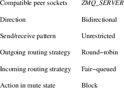
ZMQ_SERVER
A ZMQ_SERVER socket talks to a set of ZMQ_CLIENT sockets. A ZMQ_SERVER socket can only reply to an incoming message: the ZMQ_CLIENT peer must always initiate a conversation.
Each received message has a routing_id that is a 32−bit unsigned integer. The application can fetch this with zmq_msg_routing_id(3). To send a message to a given ZMQ_CLIENT peer the application must set the peer’s routing_id on the message, using zmq_msg_set_routing_id(3).
If the routing_id is not specified, or does not refer to a connected client peer, the send call will fail with EHOSTUNREACH. If the outgoing buffer for the client peer is full, the send call shall block, unless ZMQ_DONTWAIT is used in the send, in which case it shall fail with EAGAIN. The ZMQ_SERVER socket shall not drop messages in any case.
Note
ZMQ_SERVER sockets are threadsafe. They do not accept
the ZMQ_SNDMORE option on sends not ZMQ_RCVMORE on receives.
This limits them to single part data. The intention is to
extend the API to allow scatter/gather of multi−part
data.
Table 2. Summary of ZMQ_SERVER characteristics
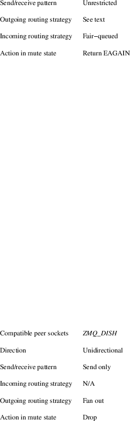
Radio−dish
pattern
The radio−dish pattern is used for
one−to−many distribution of data from a single
publisher to multiple subscribers in a fan out
fashion.
Radio−dish is using groups (vs Pub−sub topics), Dish sockets can join a group and each message sent by Radio sockets belong to a group.
Groups are null terminated strings limited to 16 chars length (including null). The intention is to increase the length to 40 chars (including null). The encoding of groups shall be UTF8.
Groups are matched using exact matching (vs prefix matching of PubSub).
Note
Radio−dish is still in draft
phase.
ZMQ_RADIO
A socket of type ZMQ_RADIO is used by a publisher to distribute data. Each message belong to a group, a group is specified with zmq_msg_set_group(3). Messages are distributed to all members of a group. The zmq_recv(3) function is not implemented for this socket type.
When a ZMQ_RADIO socket enters the mute state due to having reached the high water mark for a subscriber, then any messages that would be sent to the subscriber in question shall instead be dropped until the mute state ends. The zmq_send() function shall never block for this socket type.
Note
ZMQ_RADIO sockets are threadsafe. They do not accept the
ZMQ_SNDMORE option on sends. This limits them to single part
data.
Table 3. Summary of ZMQ_RADIO characteristics
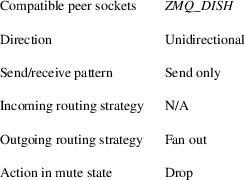
ZMQ_DISH
A socket of type ZMQ_DISH is used by a subscriber to subscribe to groups distributed by a radio. Initially a ZMQ_DISH socket is not subscribed to any groups, use zmq_join(3) to join a group. To get the group the message belong to call zmq_msg_group(3). The zmq_send() function is not implemented for this socket type.
Note
ZMQ_DISH sockets are threadsafe. They do not accept
ZMQ_RCVMORE on receives. This limits them to single part
data.
Table 4. Summary of ZMQ_DISH characteristics
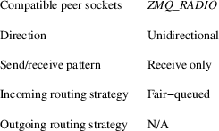
Publish−subscribe
pattern
The publish−subscribe pattern is used for
one−to−many distribution of data from a single
publisher to multiple subscribers in a fan out
fashion.
The publish−subscribe pattern is formally defined by http://rfc.zeromq.org/spec:29.
ZMQ_PUB
A socket of type ZMQ_PUB is used by a publisher to distribute data. Messages sent are distributed in a fan out fashion to all connected peers. The zmq_recv(3) function is not implemented for this socket type.
When a ZMQ_PUB socket enters the mute state due to having reached the high water mark for a subscriber, then any messages that would be sent to the subscriber in question shall instead be dropped until the mute state ends. The zmq_send() function shall never block for this socket type.
Table 5. Summary of ZMQ_PUB characteristics
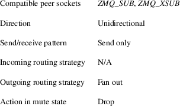
ZMQ_SUB
A socket of type ZMQ_SUB is used by a subscriber to subscribe to data distributed by a publisher. Initially a ZMQ_SUB socket is not subscribed to any messages, use the ZMQ_SUBSCRIBE option of zmq_setsockopt(3) to specify which messages to subscribe to. The zmq_send() function is not implemented for this socket type.
Table 6. Summary of ZMQ_SUB characteristics
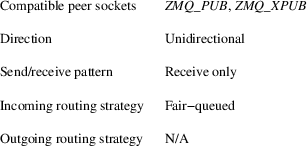
ZMQ_XPUB
Same as ZMQ_PUB except that you can receive subscriptions from the peers in form of incoming messages. Subscription message is a byte 1 (for subscriptions) or byte 0 (for unsubscriptions) followed by the subscription body. Messages without a sub/unsub prefix are also received, but have no effect on subscription status.
Table 7. Summary of ZMQ_XPUB characteristics
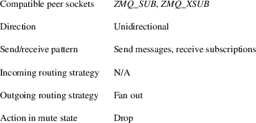
ZMQ_XSUB
Same as ZMQ_SUB except that you subscribe by sending subscription messages to the socket. Subscription message is a byte 1 (for subscriptions) or byte 0 (for unsubscriptions) followed by the subscription body. Messages without a sub/unsub prefix may also be sent, but have no effect on subscription status.
Table 8. Summary of ZMQ_XSUB characteristics
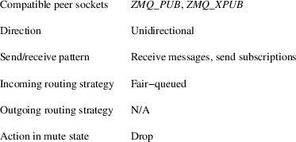
Pipeline
pattern
The pipeline pattern is used for distributing data to
nodes arranged in a pipeline. Data always flows down
the pipeline, and each stage of the pipeline is connected to
at least one node. When a pipeline stage is connected
to multiple nodes data is round−robined among
all connected
nodes.
The pipeline pattern is formally defined by http://rfc.zeromq.org/spec:30.
ZMQ_PUSH
A socket of type ZMQ_PUSH is used by a pipeline node to send messages to downstream pipeline nodes. Messages are round−robined to all connected downstream nodes. The zmq_recv() function is not implemented for this socket type.
When a ZMQ_PUSH socket enters the mute state due to having reached the high water mark for all downstream nodes, or, for connection−oriented transports, if the ZMQ_IMMEDIATE option is set and there are no downstream nodes at all, then any zmq_send(3) operations on the socket shall block until the mute state ends or at least one downstream node becomes available for sending; messages are not discarded.
Table 9. Summary of ZMQ_PUSH characteristics
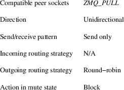
ZMQ_PULL
A socket of type ZMQ_PULL is used by a pipeline node to receive messages from upstream pipeline nodes. Messages are fair−queued from among all connected upstream nodes. The zmq_send() function is not implemented for this socket type.
Table 10. Summary of ZMQ_PULL characteristics
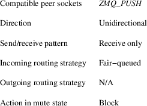
Scatter−gather pattern
The
scatter−gather pattern is the thread−safe
version of the pipeline pattern.
The scatter−gather pattern is used for distributing
data to _nodes_ arranged in
a pipeline. Data always flows down the pipeline, and each
stage of the pipeline
is connected to at least one _node_. When a pipeline stage
is connected to
multiple _nodes_ data is round−robined among all
connected _nodes_.
ZMQ_SCATTER
^^^^^^^^
A socket of type 'ZMQ_SCATTER' is used by a
scatter−gather _node_ to send messages
to downstream scatter−gather _nodes_. Messages are
round−robined to all connected
downstream _nodes_. The _zmq_recv()_ function is not
implemented for this
socket type.
When
a 'ZMQ_SCATTER' socket enters the 'mute' state due to having
reached the
high water mark for all downstream _nodes_, or, for
connection−oriented transports,
if the ZMQ_IMMEDIATE option is set and there are no
downstream _nodes_ at all,
then any linkzmq:zmq_send[3] operations on the socket shall
block until the mute
state ends or at least one downstream _node_ becomes
available for sending;
messages are not
discarded.
NOTE:
'ZMQ_SCATTER' sockets are threadsafe. They do not accept
ZMQ_RCVMORE on receives.
This limits them to single part
data.
[horizontal]
.Summary of ZMQ_SCATTER characteristics
Compatible peer sockets:: 'ZMQ_SCATTER'
Direction:: Unidirectional
Send/receive pattern:: Send only
Incoming routing strategy:: N/A
Outgoing routing strategy:: Round−robin
Action in mute state::
Block
ZMQ_GATHER
^^^^^^^^
A socket of type 'ZMQ_GATHER' is used by a
scatter−gather _node_ to receive messages
from upstream scatter−gather _nodes_. Messages are
fair−queued from among all
connected upstream _nodes_. The _zmq_send()_ function is not
implemented for
this socket type.
NOTE:
'ZMQ_GATHER' sockets are threadsafe. They do not accept
ZMQ_RCVMORE on receives.
This limits them to single part
data.
[horizontal]
.Summary of ZMQ_GATHER characteristics
Compatible peer sockets:: 'ZMQ_GATHER'
Direction:: Unidirectional
Send/receive pattern:: Receive only
Incoming routing strategy:: Fair−queued
Outgoing routing strategy:: N/A
Action in mute state::
Block
Exclusive pair pattern
The exclusive pair pattern is used to connect a peer to precisely one other peer. This pattern is used for inter−thread communication across the inproc transport.
The exclusive pair pattern is formally defined by http://rfc.zeromq.org/spec:31.
ZMQ_PAIR
A socket of type ZMQ_PAIR can only be connected to a single peer at any one time. No message routing or filtering is performed on messages sent over a ZMQ_PAIR socket.
When a ZMQ_PAIR socket enters the mute state due to having reached the high water mark for the connected peer, or, for connection−oriented transports, if the ZMQ_IMMEDIATE option is set and there is no connected peer, then any zmq_send(3) operations on the socket shall block until the peer becomes available for sending; messages are not discarded.
While ZMQ_PAIR sockets can be used over transports other than zmq_inproc(7), their inability to auto−reconnect coupled with the fact new incoming connections will be terminated while any previous connections (including ones in a closing state) exist makes them unsuitable for TCP in most cases.
Note
ZMQ_PAIR sockets are designed for inter−thread
communication across the zmq_inproc(7) transport and
do not implement functionality such as
auto−reconnection.
Table 11. Summary of ZMQ_PAIR characteristics
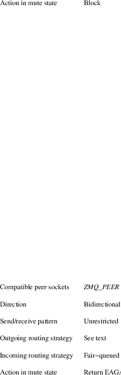
Peer−to−peer
pattern
The peer−to−peer pattern is used to connect a
peer to multiple peers. Peer can both connect and bind and
mix both of them with the same socket. The
peer−to−peer pattern is useful to build
peer−to−peer networks (e.g zyre, bitcoin,
torrent) where a peer can both accept connections from other
peers or connect to
them.
Note
Peer−to−peer is still in draft
phase.
ZMQ_PEER
A ZMQ_PEER socket talks to a set of ZMQ_PEER sockets.
To connect and fetch the routing_id of the peer use zmq_connect_peer(3).
Each received message has a routing_id that is a 32−bit unsigned integer. The application can fetch this with zmq_msg_routing_id(3).
To send a message to a given ZMQ_PEER peer the application must set the peer’s routing_id on the message, using zmq_msg_set_routing_id(3).
If the routing_id is not specified, or does not refer to a connected client peer, the send call will fail with EHOSTUNREACH. If the outgoing buffer for the peer is full, the send call shall block, unless ZMQ_DONTWAIT is used in the send, in which case it shall fail with EAGAIN. The ZMQ_PEER socket shall not drop messages in any case.
Note
ZMQ_PEER sockets are threadsafe. They do not accept the
ZMQ_SNDMORE option on sends not ZMQ_RCVMORE on receives.
This limits them to single part
data.
Table 12. Summary of ZMQ_PEER characteristics
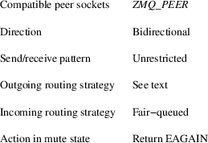
Channel pattern
The
channel pattern is the thread−safe version of the
exclusive pair pattern.
The channel pattern is used to connect a peer to precisely
one other
peer. This pattern is used for inter−thread
communication across the inproc
transport.
NOTE: Channel is still in draft phase.
ZMQ_CHANNEL
^^^^^^^^
A socket of type 'ZMQ_CHANNEL' can only be connected to a
single peer at any one
time. No message routing or filtering is performed on
messages sent over a
'ZMQ_CHANNEL'
socket.
When
a 'ZMQ_CHANNEL' socket enters the 'mute' state due to having
reached the
high water mark for the connected peer, or, for
connection−oriented transports,
if the ZMQ_IMMEDIATE option is set and there is no connected
peer, then
any linkzmq:zmq_send[3] operations on the socket shall block
until the peer
becomes available for sending; messages are not
discarded.
While
'ZMQ_CHANNEL' sockets can be used over transports other than
linkzmq:zmq_inproc[7],
their inability to auto−reconnect coupled with the
fact new incoming connections will
be terminated while any previous connections (including ones
in a closing state)
exist makes them unsuitable for TCP in most
cases.
NOTE:
'ZMQ_CHANNEL' sockets are designed for inter−thread
communication across
the linkzmq:zmq_inproc[7] transport and do not implement
functionality such
as
auto−reconnection.
NOTE:
'ZMQ_CHANNEL' sockets are threadsafe. They do not accept
ZMQ_RCVMORE on receives.
This limits them to single part
data.
[horizontal]
.Summary of ZMQ_CHANNEL characteristics
Compatible peer sockets:: 'ZMQ_CHANNEL'
Direction:: Bidirectional
Send/receive pattern:: Unrestricted
Incoming routing strategy:: N/A
Outgoing routing strategy:: N/A
Action in mute state::
Block
Native Pattern
The native pattern is used for communicating with TCP peers and allows asynchronous requests and replies in either direction.
ZMQ_STREAM
A socket of type ZMQ_STREAM is used to send and receive TCP data from a non−0MQ peer, when using the tcp:// transport. A ZMQ_STREAM socket can act as client and/or server, sending and/or receiving TCP data asynchronously.
When receiving TCP data, a ZMQ_STREAM socket shall prepend a message part containing the routing id of the originating peer to the message before passing it to the application. Messages received are fair−queued from among all connected peers.
When sending TCP data, a ZMQ_STREAM socket shall remove the first part of the message and use it to determine the routing id of the peer the message shall be routed to, and unroutable messages shall cause an EHOSTUNREACH or EAGAIN error.
To open a connection to a server, use the zmq_connect call, and then fetch the socket routing id using the zmq_getsockopt call with the ZMQ_ROUTING_ID option.
To close a specific connection, send the routing id frame followed by a zero−length message (see EXAMPLE section).
When a connection is made, a zero−length message will be received by the application. Similarly, when the peer disconnects (or the connection is lost), a zero−length message will be received by the application.
You must send one routing id frame followed by one data frame. The ZMQ_SNDMORE flag is required for routing id frames but is ignored on data frames.
Table 13. Summary of ZMQ_STREAM characteristics
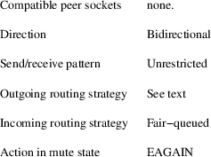
Request−reply
pattern
The request−reply pattern is used for sending requests
from a ZMQ_REQ client to one or more ZMQ_REP
services, and receiving subsequent replies to each
request
sent.
The request−reply pattern is formally defined by http://rfc.zeromq.org/spec:28.
ZMQ_REQ
A socket of type ZMQ_REQ is used by a client to send requests to and receive replies from a service. This socket type allows only an alternating sequence of zmq_send(request) and subsequent zmq_recv(reply) calls. Each request sent is round−robined among all services, and each reply received is matched with the last issued request.
For connection−oriented transports, If the ZMQ_IMMEDIATE option is set and there is no service available, then any send operation on the socket shall block until at least one service becomes available. The REQ socket shall not discard messages.
Table 14. Summary of ZMQ_REQ characteristics
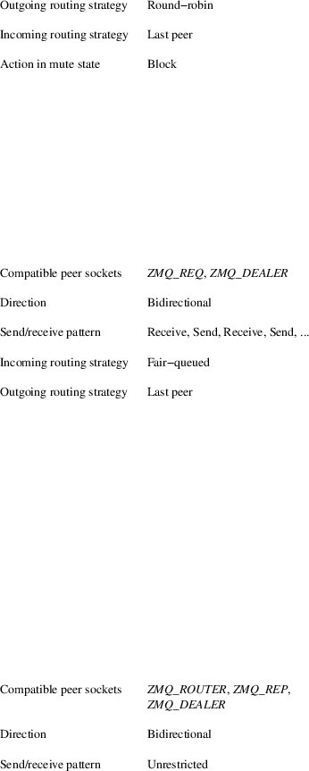
ZMQ_REP
A socket of type ZMQ_REP is used by a service to receive requests from and send replies to a client. This socket type allows only an alternating sequence of zmq_recv(request) and subsequent zmq_send(reply) calls. Each request received is fair−queued from among all clients, and each reply sent is routed to the client that issued the last request. If the original requester does not exist any more the reply is silently discarded.
Table 15. Summary of ZMQ_REP characteristics
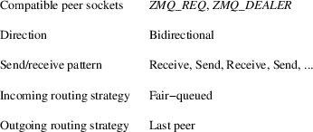
ZMQ_DEALER
A socket of type ZMQ_DEALER is an advanced pattern used for extending request/reply sockets. Each message sent is round−robined among all connected peers, and each message received is fair−queued from all connected peers.
When a ZMQ_DEALER socket enters the mute state due to having reached the high water mark for all peers, or, for connection−oriented transports, if the ZMQ_IMMEDIATE option is set and there are no peers at all, then any zmq_send(3) operations on the socket shall block until the mute state ends or at least one peer becomes available for sending; messages are not discarded.
When a ZMQ_DEALER socket is connected to a ZMQ_REP socket each message sent must consist of an empty message part, the delimiter, followed by one or more body parts.
Table 16. Summary of ZMQ_DEALER characteristics
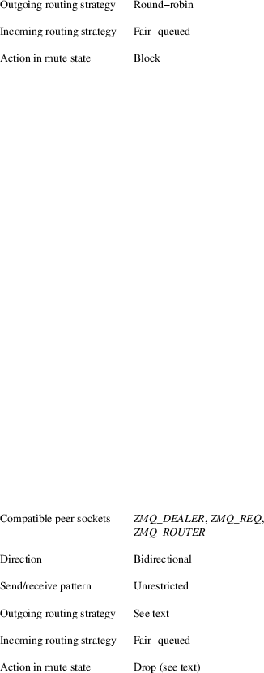
ZMQ_ROUTER
A socket of type ZMQ_ROUTER is an advanced socket type used for extending request/reply sockets. When receiving messages a ZMQ_ROUTER socket shall prepend a message part containing the routing id of the originating peer to the message before passing it to the application. Messages received are fair−queued from among all connected peers. When sending messages a ZMQ_ROUTER socket shall remove the first part of the message and use it to determine the _routing id _ of the peer the message shall be routed to. If the peer does not exist anymore, or has never existed, the message shall be silently discarded. However, if ZMQ_ROUTER_MANDATORY socket option is set to 1, the socket shall fail with EHOSTUNREACH in both cases.
When a ZMQ_ROUTER socket enters the mute state due to having reached the high water mark for all peers, then any messages sent to the socket shall be dropped until the mute state ends. Likewise, any messages routed to a peer for which the individual high water mark has been reached shall also be dropped. If, ZMQ_ROUTER_MANDATORY is set to 1, the socket shall block or return EAGAIN in both cases.
When a ZMQ_ROUTER socket has ZMQ_ROUTER_MANDATORY flag set to 1, the socket shall generate ZMQ_POLLIN events upon reception of messages from one or more peers. Likewise, the socket shall generate ZMQ_POLLOUT events when at least one message can be sent to one or more peers.
When a ZMQ_REQ socket is connected to a ZMQ_ROUTER socket, in addition to the routing id of the originating peer each message received shall contain an empty delimiter message part. Hence, the entire structure of each received message as seen by the application becomes: one or more routing id parts, delimiter part, one or more body parts. When sending replies to a ZMQ_REQ socket the application must include the delimiter part.
Table 17. Summary of ZMQ_ROUTER characteristics
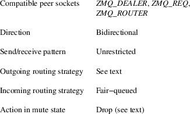
The zmq_socket() function shall return an opaque handle to the newly created socket if successful. Otherwise, it shall return NULL and set errno to one of the values defined below.
EINVAL
The requested socket type is invalid.
EFAULT
The provided context is invalid.
EMFILE
The limit on the total number of open 0MQ sockets has been reached.
ETERM
The context specified was shutdown or terminated.
Creating a simple HTTP server using ZMQ_STREAM.
void
*ctx = zmq_ctx_new ();
assert (ctx);
/* Create ZMQ_STREAM socket */
void *socket = zmq_socket (ctx, ZMQ_STREAM);
assert (socket);
int rc = zmq_bind (socket, "tcp://*:8080");
assert (rc == 0);
/* Data structure to hold the ZMQ_STREAM routing id */
uint8_t routing_id [256];
size_t routing_id_size = 256;
/* Data structure to hold the ZMQ_STREAM received data */
uint8_t raw [256];
size_t raw_size = 256;
while (1) {
/* Get HTTP request; routing id frame and then request */
routing_id_size = zmq_recv (socket, routing_id, 256, 0);
assert (routing_id_size > 0);
do {
raw_size = zmq_recv (socket, raw, 256, 0);
assert (raw_size >= 0);
} while (raw_size == 256);
/* Prepares the response */
char http_response [] =
"HTTP/1.0 200 OK\r\n"
"Content−Type: text/plain\r\n"
"\r\n"
"Hello, World!";
/* Sends the routing id frame followed by the response */
zmq_send (socket, routing_id, routing_id_size, ZMQ_SNDMORE);
zmq_send (socket, http_response, strlen (http_response), 0);
/* Closes the connection by sending the routing id frame
followed by a zero response */
zmq_send (socket, routing_id, routing_id_size, ZMQ_SNDMORE);
zmq_send (socket, 0, 0, 0);
}
zmq_close (socket);
zmq_ctx_destroy
(ctx);
zmq_init(3) zmq_setsockopt(3) zmq_bind(3) zmq_connect(3) zmq_send(3) zmq_recv(3) zmq_inproc(7) zmq(7)
This page was written by the 0MQ community. To make a change please read the 0MQ Contribution Policy at http://www.zeromq.org/docs:contributing.